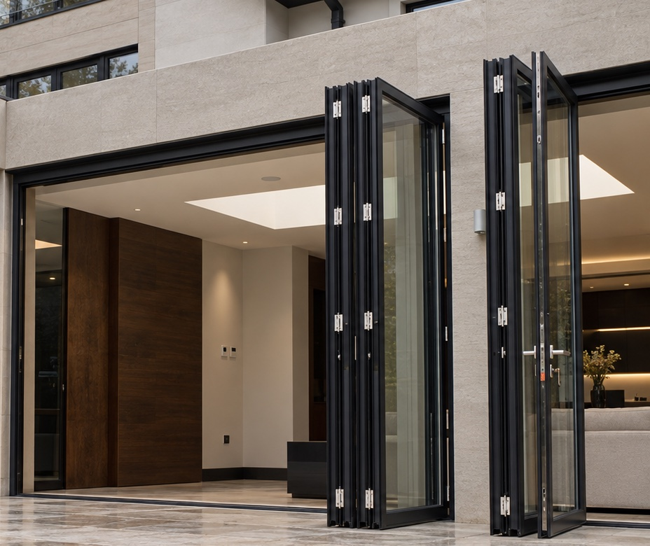
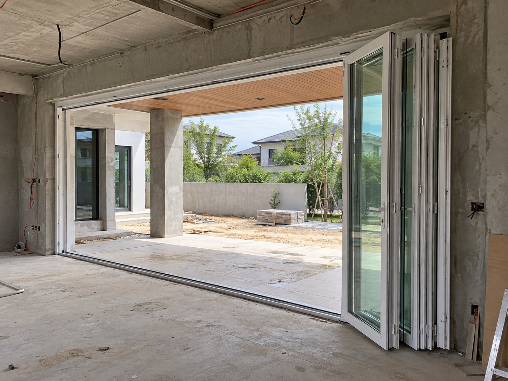
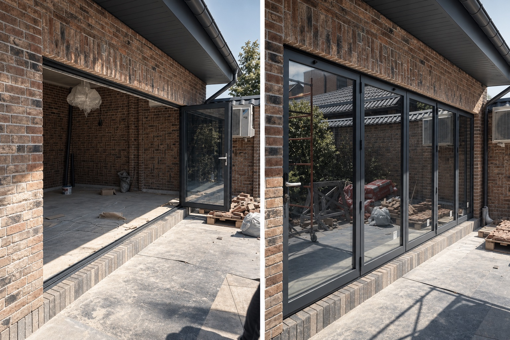

Конфигурация обновляется3 секции · 2700 × 2300 мм
01 · Конфигурация и спецификация
- Размер
- Конфигурация
- Схема
- Как работает
- Цвет
Инженерная спецификация
Параметры меняются вместе с выбранным числом секций и схемой открывания.
Ширина проёма
Секции
Схема
Чистый проход
СистемаСкладная панорамная
ПрофильALUMARK S70
ФурнитураPatio Fold
Высотадо 2 800 мм
Глубина рамы
Стеклопакет
Ширина створки
Статус
На объектах
Смотреть в интерьере
Как складная система освобождает проём и объединяет интерьер с террасой.



Как выбрать
Почти полностью открытый проём
Складная система FS собирает створки в компактную пачку у края проёма. Это решение для террас, веранд, ресторанов и пространств, где важно максимально объединить интерьер с улицей.
Введите фактический размер проёма: система сама оставит только допустимое число секций и схемы, рассчитает ориентировочный проход, стоимость и срок изготовления.
Подробнее о системе →Проверка инженером
Нужен сложный проём или монтажный узел?
Пришлите размеры или проект. Проверим вес створок, стеклопакет, порог, водоотвод и подготовим точную смету.